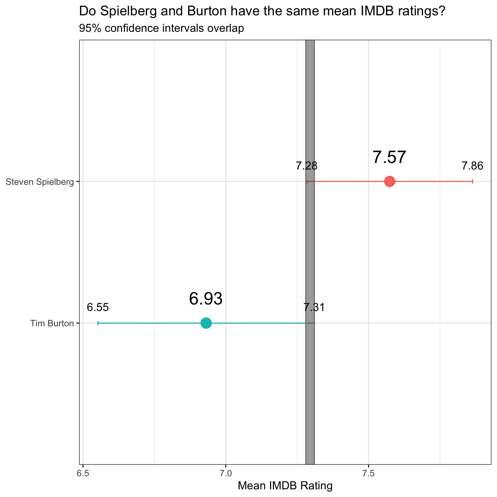

Is the difference in mean IMBD ratings for S. Spielberg and T. Burton statistically significant?
We will explore whether the mean IMDB rating for Steven Spielberg and Tim Burton are the same or not. We will plot the confidence intervals for the mean rating per director and check if they overlap.
Lets start by explicitly stating our null-hypothesis and alternative hypothesis: H0: there is no difference in the mean IMDB-rating for movies produced by Steven Spielberg or Tim Burton. Ha: There is a significant difference between these mean IMDB-ratings.
Now, lets load the data and examine its structure.
movies <- read_csv(here::here("data", "movies.csv"))
glimpse(movies)## Rows: 2,961
## Columns: 11
## $ title <chr> "Avatar", "Titanic", "Jurassic World", "The Aveng…
## $ genre <chr> "Action", "Drama", "Action", "Action", "Action", …
## $ director <chr> "James Cameron", "James Cameron", "Colin Trevorro…
## $ year <dbl> 2009, 1997, 2015, 2012, 2008, 1999, 1977, 2015, 2…
## $ duration <dbl> 178, 194, 124, 173, 152, 136, 125, 141, 164, 93, …
## $ gross <dbl> 7.61e+08, 6.59e+08, 6.52e+08, 6.23e+08, 5.33e+08,…
## $ budget <dbl> 2.37e+08, 2.00e+08, 1.50e+08, 2.20e+08, 1.85e+08,…
## $ cast_facebook_likes <dbl> 4834, 45223, 8458, 87697, 57802, 37723, 13485, 92…
## $ votes <dbl> 886204, 793059, 418214, 995415, 1676169, 534658, …
## $ reviews <dbl> 3777, 2843, 1934, 2425, 5312, 3917, 1752, 1752, 3…
## $ rating <dbl> 7.9, 7.7, 7.0, 8.1, 9.0, 6.5, 8.7, 7.5, 8.5, 7.2,…The following code will create the plot of the confidence intervals we previously discussed.
movies1 <- movies %>%
filter(director %in% c("Steven Spielberg", "Tim Burton")) %>%
select(director, rating) %>%
group_by(director) %>%
summarize(avg_rating= mean(rating),
count = n(),
sderror = sd(rating)/sqrt(count-1)) %>%
mutate(upper_limit = avg_rating + 1.96*sderror,
lower_limit = avg_rating - 1.96*sderror) %>%
arrange(avg_rating)
ggplot(movies1, mapping=aes(
x = avg_rating,
y= reorder(director, avg_rating),
colour = director)) + geom_errorbarh(
movies1,
width=.03,
mapping=aes(
xmin=upper_limit,
xmax=lower_limit)) + theme_bw() +
geom_point(movies1, mapping=aes(
x=avg_rating,
size = 4)) + theme(legend.position = "none") +
geom_rect(
movies1[1,],
mapping = aes(
xmin = 7.28,
xmax = 7.31,
ymin = 0,
ymax = 3,
color = NA,
alpha = 0.2)) +
geom_text(aes(
x = upper_limit,
y = director,
label=round(upper_limit, 2)), vjust = -1.5, color = "black") +
geom_text(aes(
x = lower_limit,
y = director,
label=round(lower_limit, 2)), vjust = -1.5, color = "black") +
geom_text(aes(
x= avg_rating,
y = director,
label=round(avg_rating, 2)), vjust = -1.5, color = "black", size = 6) +
labs(title = "Do Spielberg and Burton have the same mean IMDB ratings?",
subtitle = "95% confidence intervals overlap") +
theme(axis.title.y = element_blank()) +
xlab("Mean IMDB Rating")
Since these intervals overlap, we will run a hypothesis test to help us draw a conclusion.
ratings_2directors <- movies %>%
filter(director == "Tim Burton"|director == "Steven Spielberg") %>%
group_by(director) %>%
select(director, rating)
t.test(rating ~ director, data = ratings_2directors)##
## Welch Two Sample t-test
##
## data: rating by director
## t = 3, df = 31, p-value = 0.01
## alternative hypothesis: true difference in means is not equal to 0
## 95 percent confidence interval:
## 0.16 1.13
## sample estimates:
## mean in group Steven Spielberg mean in group Tim Burton
## 7.57 6.93Since the t-test gives us a p-value of 0.01, we can refute our null-hypothesis and confidently state that the true difference in mean ratings for both directors is not zero.